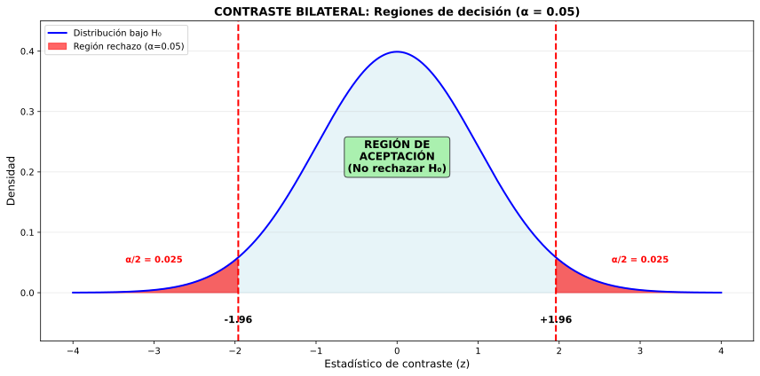
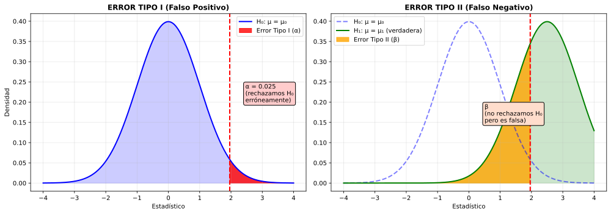

| Hipótesis | Símbolo | Descripción | Ejemplo |
|---|---|---|---|
| Nula | H₀ | Afirmación conservadora (status quo) |
μ = 100 (no ha cambiado) |
| Alternativa | H₁ (o Hₐ) | Afirmación que se quiere probar (cambio/diferencia) |
μ ≠ 100 (ha cambiado) |

| Región | Descripción | Decisión |
|---|---|---|
| Aceptación | Estadístico de prueba dentro del rango esperado | NO rechazamos H₀ |
| Rechazo (crítica) | Estadístico demasiado extremo (colas) | Rechazamos H₀ |

| Error | Realidad | Decisión | Probabilidad | Consecuencia |
|---|---|---|---|---|
| Tipo I (Falso positivo) |
H₀ es verdadera | Rechazamos H₀ | α (nivel de significación) |
"Alarma falsa" Ej: Decir que hay efecto cuando no lo hay |
| Tipo II (Falso negativo) |
H₀ es falsa | NO rechazamos H₀ | β | "No detectar cambio real" Ej: No ver efecto que existe |
| Decisión correcta 1 | H₀ verdadera | NO rechazamos | 1 - α | ✓ Bien |
| Decisión correcta 2 | H₀ falsa | Rechazamos | 1 - β (potencia) |
✓ Bien |
Ej 1: Una fábrica de galletas afirma que el peso medio de sus paquetes es 250 g. Un inspector sospecha que pesan menos. Plantea el contraste.
Identificación del problema:
Hipótesis:
Tipo de contraste: Unilateral izquierdo
Región crítica: Cola izquierda (valores muy por debajo de 250)
Error Tipo I: Concluir que pesan menos cuando realmente pesan 250 g (acusar injustamente a la fábrica)
Error Tipo II: No detectar que pesan menos cuando sí pesan menos (dejar pasar un fraude)
Ej 2 (Contexto Vigo): Vitrasa afirma que el tiempo medio de espera en parada es 8 minutos. Un estudio ciudadano quiere verificar si es diferente. Plantea H₀ y H₁. ¿Bilateral o unilateral?
Hipótesis:
Tipo: BILATERAL
Razón: Queremos detectar si es diferente (podría ser mayor O menor). No tenemos sospecha direccional previa.
Regiones críticas: Ambas colas (valores muy bajos Y muy altos)
Si α = 0.05 → 0.025 en cada cola
Ej 3: Clasifica cada error en un test médico para detectar una enfermedad:
Definición de hipótesis en este contexto:
Caso a) Diagnosticar enfermo a sano:
Caso b) Diagnosticar sano a enfermo:
Reflexión ética: En medicina, suele ser preferible minimizar β (no perder enfermos) aunque aumente α (falsos positivos), porque es más grave no tratar una enfermedad real.
Ej 4: Contraste bilateral con α = 0.05. Calculado z = 2.3. Región crítica: |z| > 1.96. ¿Decisión?
Datos:
Evaluación:
Decisión: RECHAZAMOS H₀
Interpretación:
Precaución: "Rechazar H₀" NO significa "probar H₁ con certeza". Solo significa que los datos son incompatibles con H₀ al nivel α elegido.
Para un contraste bilateral H₀: μ = μ₀ con nivel α:
Ejemplo: IC 95% para μ: [48, 56]. Si H₀: μ = 50 → 50 ∈ [48,56] → No rechazamos.
Pero si H₀: μ = 60 → 60 ∉ [48,56] → Rechazamos al 5%.